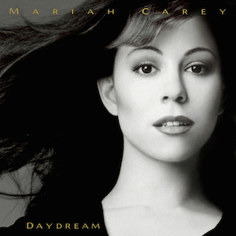

Mariah Carey
Daydream
Album was released in October 3, 1995
Track1 Fantasy
Track2 Underneth The Stars
Track3 One Sweet Day
Track4 Open Arms
Track5 Always Be My Baby
Track6 I Am Free
Track7 When I saw You
Track8 Long Ago
Track9 Melt Away
Track10 Forever
Track11 Day Dream Interlude
Track12 Looking In
Butterfly
Album was released in September 16, 2022
Track1 Honey
Track2 Butterfly
Track3 My All
Track4 The Roof (Back in Time)
Track5 Fourth of July/p>
Track6 Breakdown
Track7 Babydoll
Track8 Close My Eyes
Track9 Whenever You Call
Track10 Fly Away
Track11 Beautiful Ones
Track12 Outside
Track13 Whenever You Call(feat. Brian McKnight)
Track14 The Roof (Feat Brandy)
Track15 Butterfly (live)
Track16 My All (Live)
Track17 4th of July (acapella)
Track18 Outside (acapella)
Track19 Butterfly (Club Remix)
Track20 Honey (Remix)
Mariah Carey's Magical Christmas Special
Album was released in December 11, 2020
Track1 Overture "Little Mariah's Theme
Track2 Sleigh Ride
Track3 Hark the Heralds Angels Sing (interlude)
Track4 When Christmas Comes - Magical Christmas Mix
Track5 Let It Snow!Let It Snow!Let It Snow!/p>
Track6 Peanuts...All I want (interlude)
Track7 Christmas Time Is Here
Track8 Santa Claus is Coming To Town (intro)
Track9 Oh Santa (feat Arana Grande and Jennifer Hudson)
Track10 Here Comes Santa Claus(Right Down Santa CLaus Lane)
Track11 Sugar Plum Fairy
Track12 Christmas Time is in the Air Again
Track13 O Holy Night
Track14 Joy To The World
Track15 Silent Night
Track16 All I want For Christmas Is You
Track17 "Little Mimi's" Theme
References: Wikipedia. (2022, September 22). Wikipedia. Retrieved from Mariah Carey: https://en.wikipedia.org/wiki/Mariah_Carey